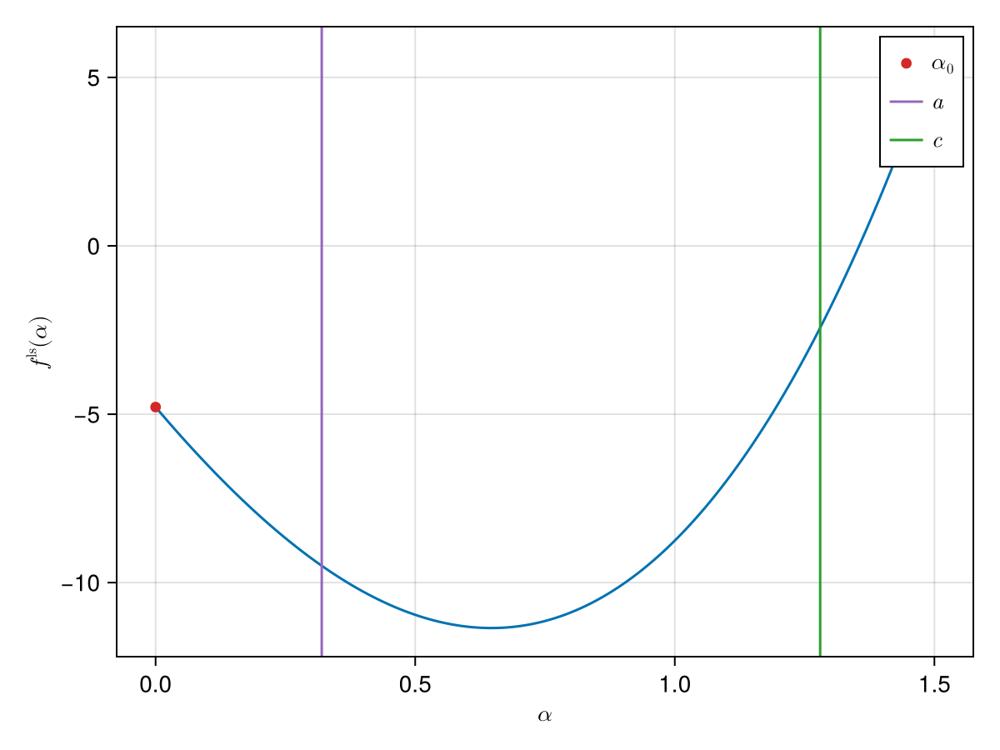
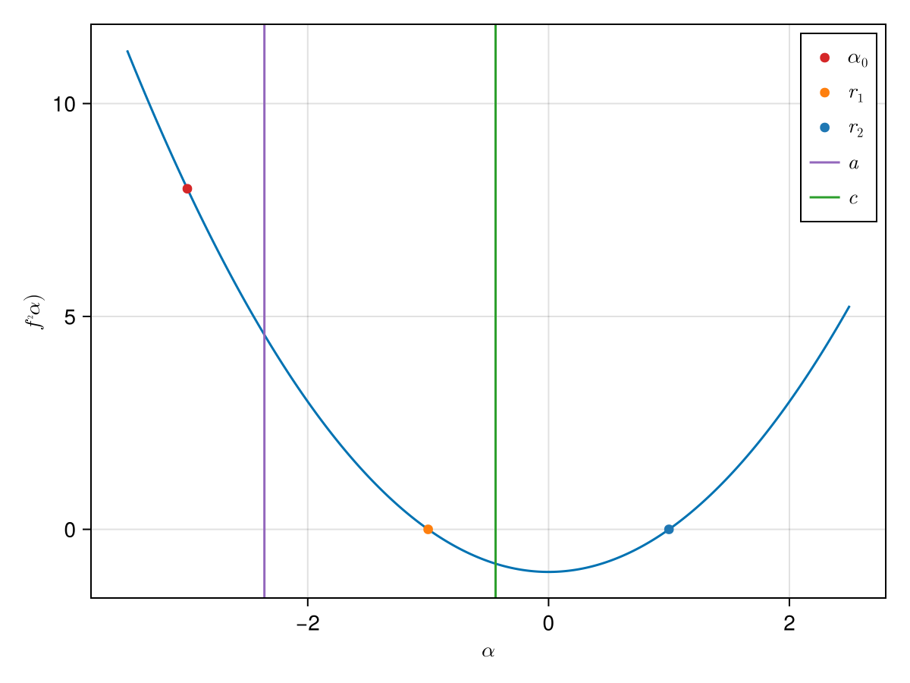

Bisections
Bisections work by moving an interval until we observe one in which the sign of the derivative of the function changes.
Example
We consider the same example as we had when demonstrating backtracking line search:
ls_obj = linesearch_objective(obj, cache)Bracketing
For bracketing [4] we move an interval successively and simultaneously increase it in the hope that we observe a local minimum (see bracket_minimum).
α₀ = 0.0
(a, c) = bracket_minimum(Function(ls_obj), α₀)(0.32, 1.28)
We then use this interval to start the bisection algorithm.
Potential Problem with Backtracking
We here illustrate a potential issue with backtracking. For this consider the following function:
using SimpleSolvers: bracket_root
f2(α::T) where {T <: Number} = α^2 - one(T)
α₀ = -3.0
(a, c) = bracket_root(f2, α₀)(-2.3600000000000003, -0.44000000000000017)And when we plot this we find:

And we see that the interval now contains two roots, $r_1$ and $r_2$.